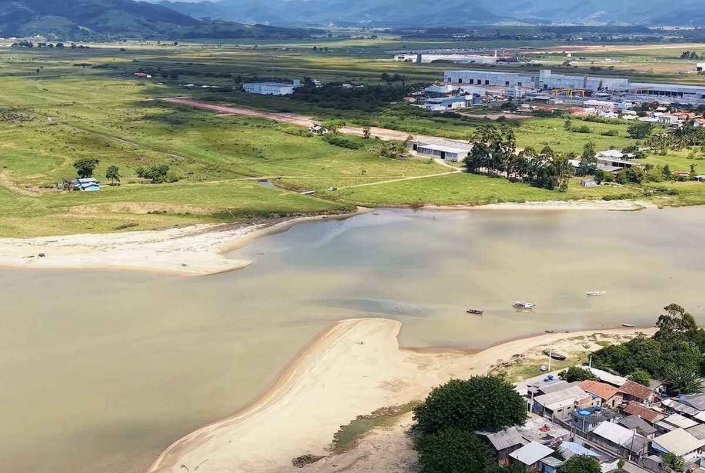

Uma das obras mais aguardadas da história de Tijucas acaba de alcançar um marco decisivo. O município recebeu a Licença Ambiental de Instalação (LAI), a última autorização necessária para a construção dos Molhes e a dragagem da Boca da Barra.
Com a licença emitida pelo Instituto do Meio Ambiente de Santa Catarina (IMA), o projeto está oficialmente liberado para avançar para a fase de execução. A entrega oficial do documento acontecerá no dia 1º de julho.
A obra prevê a construção de dois molhes, somando 823 metros de extensão, além da dragagem do canal da foz do Rio Tijucas. O objetivo é combater o assoreamento acumulado ao longo de décadas e melhorar as condições de navegação na região.
O projeto também representa uma nova perspectiva para o desenvolvimento econômico da cidade. Com o acesso ao mar fortalecido, Tijucas poderá ampliar oportunidades ligadas à pesca, ao turismo náutico, à instalação de marinas e a novos investimentos voltados à Economia do Mar.
Para muitos moradores, a conquista simboliza o fim de uma espera de mais de 20 anos. O sonho dos Molhes, discutido por diversas gerações, está mais próximo de sair do papel.
Mais do que uma obra de infraestrutura, os Molhes representam um novo capítulo para Tijucas, reforçando sua ligação histórica com o rio, o mar e o potencial de crescimento da cidade.
E você, acredita que essa será uma das obras mais transformadoras da história de Tijucas? 🌊🚧